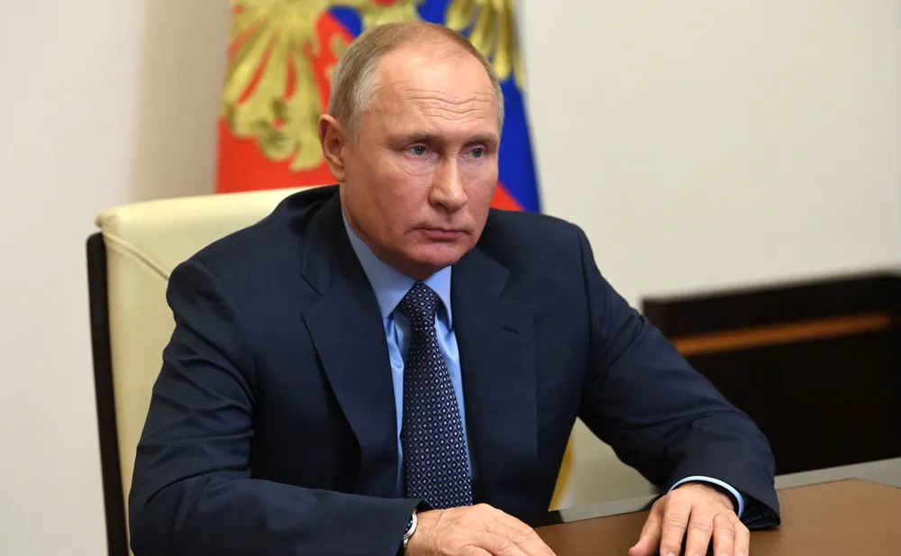

Utrikes

Ryskt förslag till vapenvila skeptiskt mottagen
I ett uttalande från Rysslands "president" Vladimir Putin föreslår han en fullständig vapenvila som ska gälla under onsdagen över hela fronten. Anledningen till förslaget är att "båda sidor ömsesidigt ska få lägga om såren". Beskedet har lett till splittrade åsikter både i och utanför Ukraina.
Ukraina har försökt få till en vapenvila redan från dag ett av den ryska invasionen, men Ryssland har alltid ställt krav som Ukraina vägrat acceptera. Så att Putin nu själv går ut med ett villkorslöst tillfälligt eldupphör ses som väldigt misstänksamt av många högt uppsatta inom Ukrainas ledning. Bland villkoren hittas även i väldigt liten text en klausul som kan tolkas som att Ryssland får rätten att häva sin "Första-april-rätt", vilket tillåter dem att bryta mot avtalet i hur stor utsträckning som helst. Vad som gör det värre är att denna rätt stadgas av självaste FN.
När Ukrainas president Volodymyr Zelensky under en pressträff sent igår kväll fick frågan om huruvida Ukraina ska acceptera vapenvilan svarade han "Ukraina förhandlar inte med terrorister". Denna åsikt delas inom den militära ledningen, där bland annat Ukrainas överbefälhavare Oleksandr Syrskyj uttryckt sig starkt på X. "Ingen kommer någonsin att tro på dig Putin, din taskmört", skriver han. Samtidigt har USA:s "president" Donald Trump tagit åt sig all ära för förslaget. På sin Truth Social-sida skriver han om hur Ukraina ska vara tacksamma för allt han gjort för dem, och acceptera vapenvilan direkt. Han avslutar inlägget med att säga att det är "Sleepy Joe’s" fel att det över huvud taget är krig. Enligt Lökens experter kommer Ukraina inte att acceptera vapenvilan.